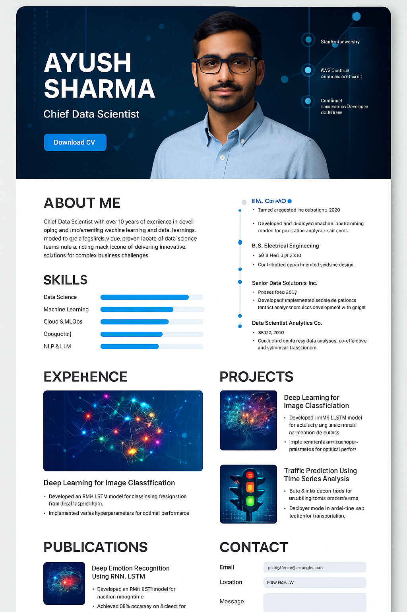

Research papers, articles and talks that showcase my scientific contributions
This research explored the fusion of audio and text modalities to classify human emotions. A recurrent neural network with long short‑term memory (LSTM) units was trained on a multi‑modal dataset of over 65,000 labelled voice samples and accompanying transcripts. By aggregating features across speech prosody and textual sentiment, the model learned to recognize seven out of eight target emotions with state‑of‑the‑art accuracy.

Presented at the Institute of Engineers All‑India Students Conference, this work developed an adaptive traffic light controller using a Raspberry Pi, LDR sensors and ultrasonic sensors. The system monitored real‑time vehicle density and ambient light to dynamically adjust signal phases, reducing average waiting time at intersections by 33% and improving throughput during peak hours.
I enjoy sharing my expertise with the community and discussing emerging trends in machine learning and data science. Here are a few recent appearances: